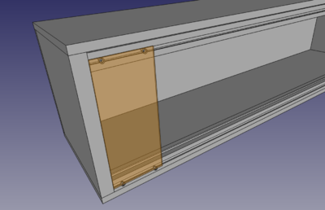

Modular
From base48

Contents
parameters
- voltage: ±15V
- control voltages: https://www.gearslutz.com/board/electronic-music-instruments-and-electronic-music-production/908904-analog-cv-control-voltage-standards.html
- ±15V, +5V, (+3V3) rails, 2x5 flat cable connectors
- module height: 4U
- panel dimensions: http://loudestwarning.tumblr.com/4Umodular
- connectors: banana
- color coding: https://sdiy.info/wiki/Banana_jack_colour_schemes
{kind=link}
what to build
{kind=link}
- PSU
-
output module- passive one w/ stereo jack + attenuator probably sufficient
- https://www.befaco.org/en/modulo-de-salida/
- https://www.thonk.co.uk/shop/befaco-output-module-ii-full-diy-kit/
- http://www.ericasynths.lv/en/shop/diy/diy-kits-1/diy-output/
- breadboard module
- amp+speaker module?
- VCO
- drums
- ...
case

{kind=link}
case FreeCAD models: https://github.com/hackerspace/modular/tree/master/3d
{kind=link}
- details needed
- 2 rows per cabinet, wood + ALU rails (which?)
more
links
- http://musicfromouterspace.com/analogsynth_new/YOURANALOGSYNTH/YOURANALOGSYNTH.php
- http://chrisbeckstrom.com/the-modular/
- http://dintree.com/
- https://www.befaco.org/en/sinte-modular/
- https://issuu.com/lookmumnocomputer/docs/zine_6
- https://aisynthesis.com/build/
- http://www.ti.com/lit/ds/symlink/lm13700.pdf
- panels: http://www.elektroizolanty.cz/elektroizonlanty/eshop/3-1-SKLOTEXTIT-desky-G10-130-C
- https://arxiv.org/abs/1805.09056
- https://www.cgs.synth.net/modules/psycho_lfo.html